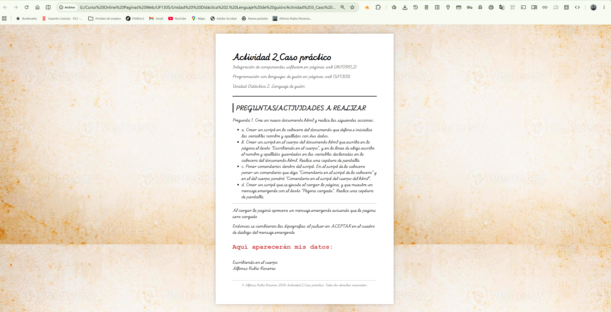
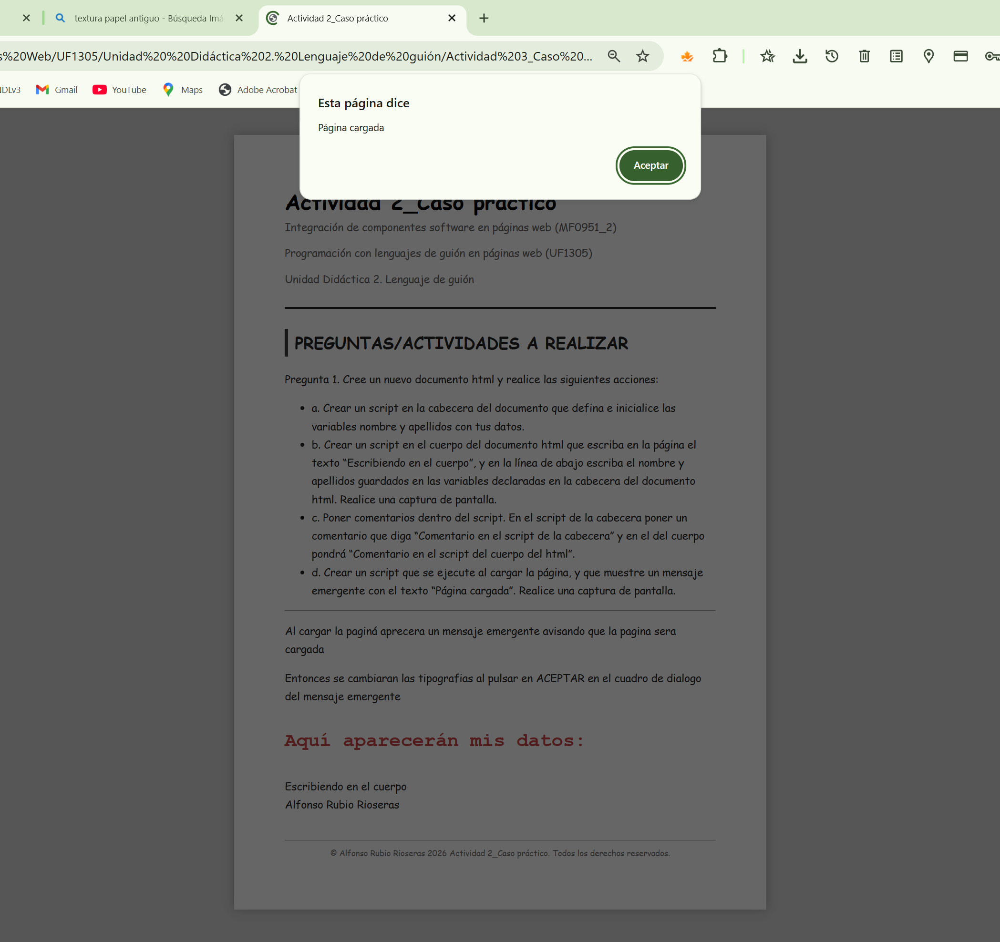

Actividad 2_Caso práctico
Integración de componentes software en páginas web (MF0951_2)
Programación con lenguajes de guión en páginas web (UF1305)
Unidad Didáctica 2. Lenguaje de guión
PREGUNTAS/ACTIVIDADES A REALIZAR
Pregunta 1. Cree un nuevo documento html y realice las siguientes acciones:
- a. Crear un script en la cabecera del documento que defina e inicialice las variables nombre y apellidos con tus datos.
- b. Crear un script en el cuerpo del documento html que escriba en la página el texto “Escribiendo en
el cuerpo”, y en la línea de abajo escriba el nombre y apellidos guardados en las variables
declaradas en la cabecera del documento html. Realice una captura de pantalla.
- c. Poner comentarios dentro del script. En el script de la cabecera poner un comentario que diga
“Comentario en el script de la cabecera” y en el del cuerpo pondrá “Comentario en el script del
cuerpo del html”.
- d. Crear un script que se ejecute al cargar la página, y que muestre un mensaje emergente con el
texto “Página cargada”. Realice una captura de pantalla.
Al cargar la paginá aprecera un mensaje emergente avisando que la pagina sera cargada
Entonces se cambiaran las tipografias al pulsar en ACEPTAR en el cuadro de dialogo del mensaje emergente
Aquí aparecerán mis datos:
Aquí aparecerán mis capturas:


© Alfonso Rubio Rioseras 2026 Actividad 2_Caso práctico. Todos los derechos reservados.